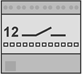
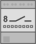
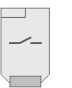
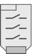
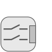
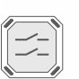
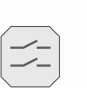

Switching actuators properties
The listed properties are displayed in the Hardware and network editor > Inspector window > Properties tab when the device with KNX PL-Link is selected in the Device view tab.
N 530D31 | N 530D51 | N 534D61 | N 535D51 |
|
|  |  |
| |
RL 512/23 | RL513/23 | RS 510/23 | UP 510/03 | UP 510/13 |
 |  |  |  |  |

General and Catalog information
The General and Catalog Information group provides information about the device.
Property | Description | Default value |
|---|---|---|
Mode | Mode shows the network mode of the device. Read only. | KNX PL-Link |
Name | Name is a text field to enter the name of the device. The name is used to identify the device in the device view. | Depends on other settings. |
Comment | Comment is a free text field to enter any helpful information on the device. | - |
Power consumption | Power consumption shows the power the device consumes. Read only. Unit: [mA] The value is used to calculate the remaining power of the KNX rail. See also power consumption and supply on KNX rail of PXC3 or KNX rail of DXR2. | Depends on the device type. |
Short designation | Short designation shows a short description of the device. Read only. | Depends on the device type. |
Order number | Order number shows the device type. Read only. | Depends on the device type. |
Version | Version shows an internal version of the device. Read only. | - |
Description | Description shows a short description of the device. Read only. | Depends on the device type. |
Device information
Property text | Description | Default value |
|---|---|---|
Device address (KNX): | Device address (KNX) shows the fixed standard address for devices with KNX PL-Link. Read only. | 255 |
Serial number used | Serial number used defines the method used for device identification.
|
|
Serial number | Serial number defines the serial number used for device identification. Serial number is only enabled and relevant if Serial number used is enabled. | 000000000000 |
 : The serial number entered in the text field Serial number is used for device identification.
: The serial number entered in the text field Serial number is used for device identification. : Device identification has to be done in Web interface. The device has to be in programming mode for Web interface to perform the device identification.
: Device identification has to be done in Web interface. The device has to be in programming mode for Web interface to perform the device identification.
Alarming
Property | Description | Default value |
|---|---|---|
Alarming |
|
|
Functions
The functions table in the Channel Overview provides an overview of the channels of the device. Depending on the device the values in the table are read only or can be edited. The available types depend on the device and the application function.
Property | Description |
|---|---|
Name | Name of the channel. Read only. |
Type | Name of the function. |
Zone | Part of the geographical address of the device. Range: 1...126 |
Room | Part of the geographical address of the device. Range: 1...63 |
Subzone | Part of the geographical address of the device. Range: 1...15 Note |
Activate | Activate defines if the channel is activated.
|
The functions are described briefly in the table below.
Type | Description | Number of channels used |
|---|---|---|
System | Device information that is mapped to the BACnet object peripheral device (PrphDev). Read only. | 1 |
Some of the functions can be configured. The properties of those functions are described below in order of their appearance in the drop-down list.
Light switching actuator basic LSAB
Property text | Description | Default value |
|---|---|---|
Power return mode | Power return mode defines the behavior of the light when power returns after a power failure or when the application is restarted.
|
|
Power failure mode | Power failure mode defines the behavior of the actuator if the power fails.
|
|
Prio forced control | Prio forced control sets the priority for forced control commands. Range: | 6 |
Blink On-time | Blink Off-time and Blink On-time define the blinking frequency for the blink warning function. The Blink On-time defines how long the light will be switched on. Range: 0 [0.1 s]: The blink warning function is disabled. | 10 |
Blink Off-time | Blink Off-time and Blink On-time define the blinking frequency for the blink warning function. The Blink Off-time defines how long the light will be switched off. Range: 0 [0.1 s]: The blink warning function is disabled. | 2 |
 off: The lights are off.
off: The lights are off. 1...16
1...16